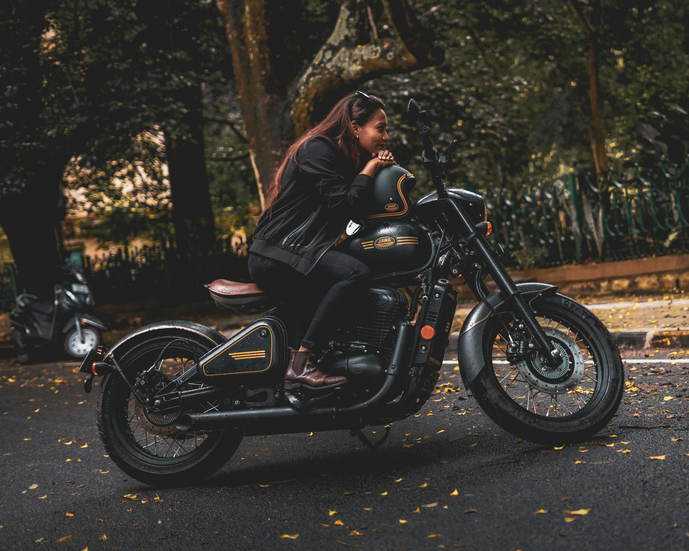

history
Benelli was established in Pesaro, Italy in 1911, which possibly makes it the oldest of Italian motorcycle factories in operation. (Moto Guzzi—the oldest motorcycle factory in non-stop operation—was established in 1921, and Peugeot is the world's oldest and still producing motorcycle factory due to establishing in 1898.) After losing her husband, the widow Teresa Boni Benelli invested all of the family capital into the business in the hope that it would offer stable work for her six sons: Giuseppe, Giovanni, Francesco, Filippo, Domenico and Antonio ("Tonino"). She also sent Giuseppe and Giovanni to study Engineering in Switzerland. Initially the business had 6 employees in addition to the 5 brothers working (Tonino didn't work because he was too young.)